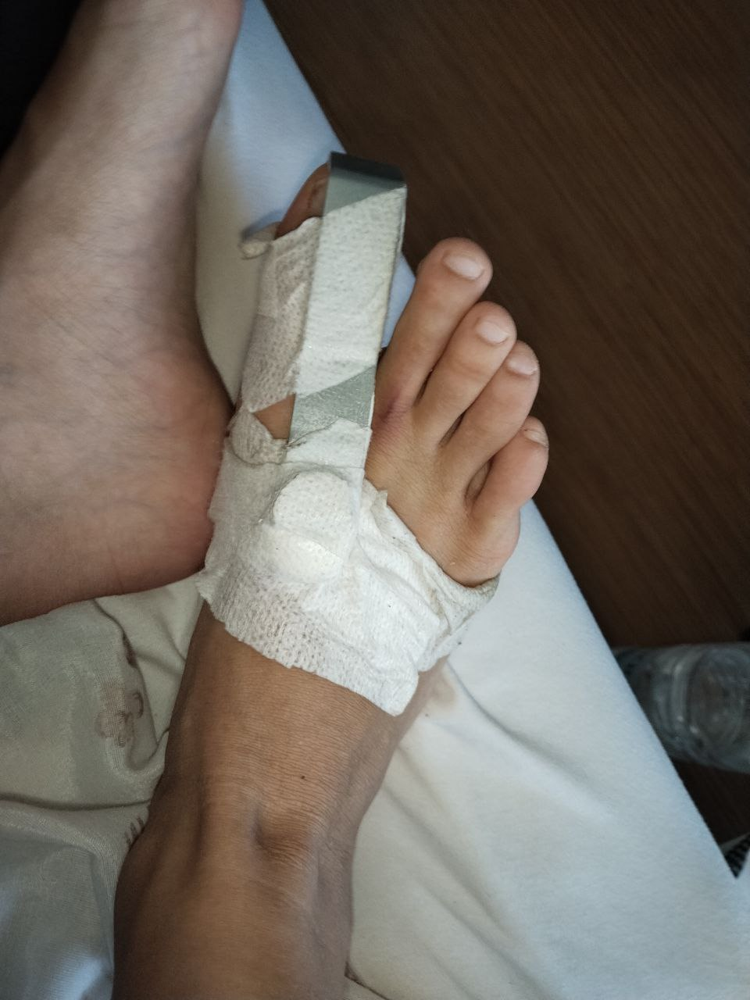
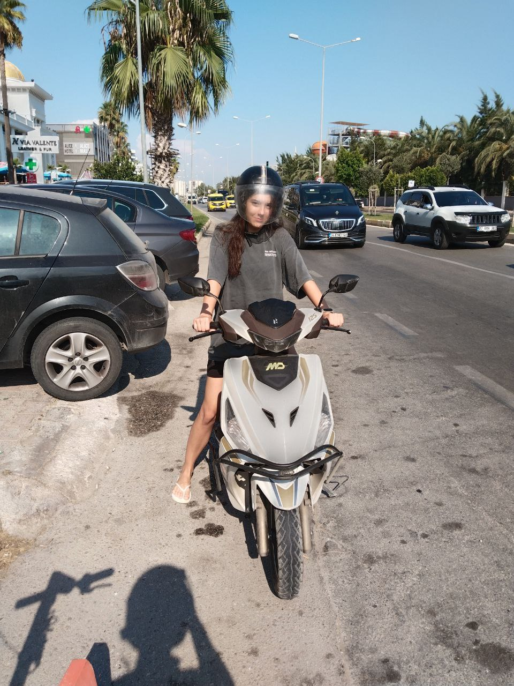

Как меня задавила машина
Как то друг решил устроить мне сюрприз и взял в аренду скутер. Ужасное ДТП в Турции. Я ничего не ожидала, вышла так как обычно ходят в турции, в шортах в футболке. Даже без экипировки потому что вообще не ожидала что он может такое придумать. Думаю ну ладно попробую. В итоге почти на пустой улице он едет любуется видимо Турцией, возле парковочных мест как турок просто сдает на нас задом и друг никак не смог даже выехать. У меня вся нога исцарапана об асфальт, палец на ноге был ушиблен так, что решили в травмпункт везти. Друга порезало осколками зеркал и пришлось зашивать.
Причем когда мы ездили в больницу его зашили, а меня не смогли потому что я несовершеннолетняя и без согласия родителей или того кто за меня ответсвеннен не могла получить медицинскую помощь, пока руководителя не растормашили
Приезжала прямо полиция. Они зафиксировали это как ДТП, но по поводу ущерба сказали самим разбираться. И тут не понятно реально кто виноват. Сначала мне казалось что это водитель не посмотрел даже, надо всегда смотреть куда выезжаешь еще и задом. А потом подумала что ну есть ведь еще слепая зона в которой мы могли оказаться да и друг не среагировал.

